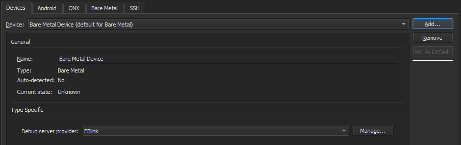
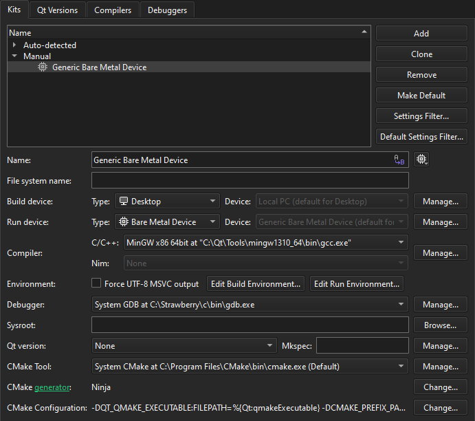

Add Bare Metal devices
Run and debug applications on small devices that are not supported by the remote Linux device plugin by using GDB or a hardware debugger.
To add a bare metal device:
- Go to Preferences > Devices > Devices.

- Select Add > Bare Metal Device > Start Wizard.
- In Debug server provider, select a debug server provider.
- Select Finish to return to > Devices.
- Select Apply to add the device.
Add the device to a kit
To add a kit for building applications and running them on bare metal devices, go to Preferences > Kits and select Add.

Build applications for and run them on bare metal devices in same way as for and on the desktop.
See also Add kits, Build for many platforms, How To: Develop for Bare Metal, Run on many platforms, and Developing for Bare Metal Devices.